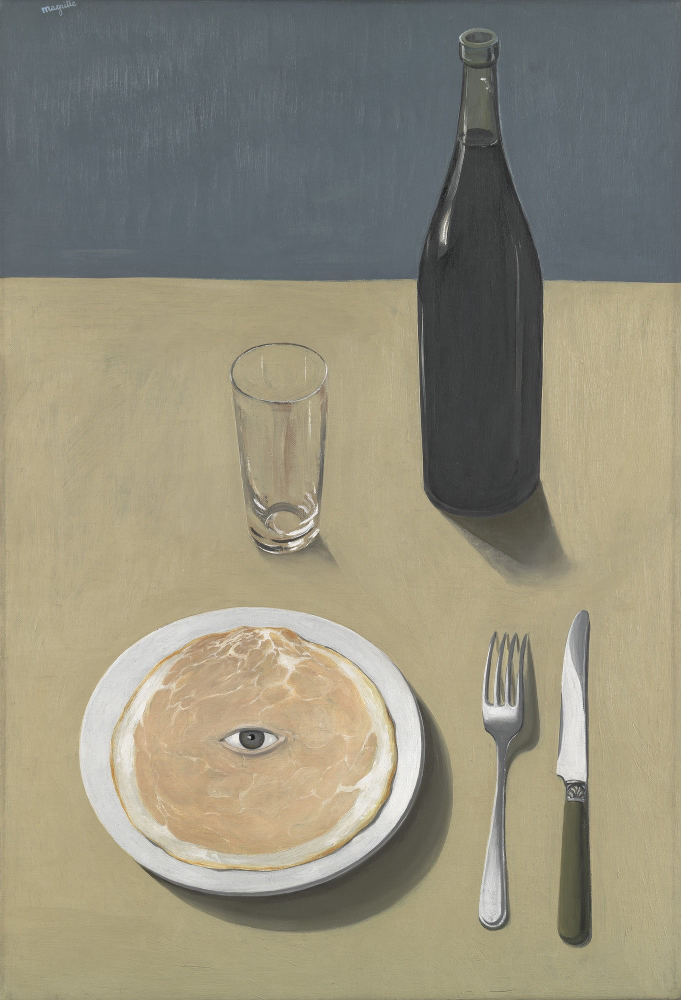

The Portrait
(1932) Oil Painting
during
my first trip to the MoMa i took a bunch of photos of art that immediately stood out to me. when i looked back on them, many of them were made by rene magritte. handsdown the artist that has
influenced
me the most this past year. i love this
painting
especially. such a simple composition and brush strokes that make it look like a graphic. however it features an eye unexplainable served on a plate. his mind is on a different level
